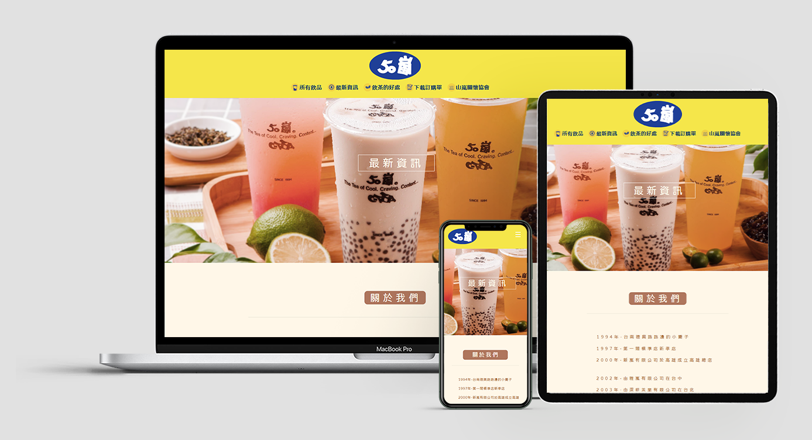
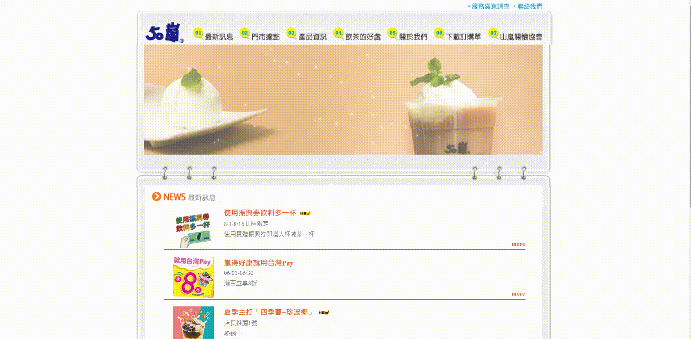

根據原50嵐現有網站重新設計，改善原網站的缺點，並加強50嵐品牌之特色，增加飲料資訊，並將商品圖替換為較為美觀之版本。
旨在藉由網站行銷，提供顧客最新資訊，進而增加銷售量。
團隊分工
- 林沛琪 : wireframe / 所有飲品頁及RWD
- 李婕澐 : 首頁及RWD / icon設計
- 陳宏威 : 最新資訊頁及RWD / 整合
使用工具/框架
- Figma
- Visual Studio Code
- jQuery 3.5.1
Wireframe
RWD Prototype
在本專案中，我主要負責的是飲料頁面的部分。由於原網站的飲品業只有文字菜單，因此我將所有品項增加照片及介紹，並增加分類，讓顧客選擇飲料時能更加清楚有效率。
在手機板的介面上，將原先的導覽列換成漢堡選單，底部也只留下常用資訊，盡可能減少畫面上過多的訊息量，維持簡潔且美觀。
Design Guideline
排版以清楚乾淨為主，顏色選用50嵐的品牌黃、品牌藍做為網站的主要配色，加強50嵐之品牌風格，字體選用粉圓體，營造親切、評價的氛圍，並讓網站整體維持清爽的感覺。
在設計元素上也減少裝飾，讓網站的資訊能更加一目瞭然。
與原網站之比較

根據原本的50嵐網頁我們分析了以下幾點問題:1.網頁視覺不夠吸引人 2.風格不明確，品牌特色不鮮明 3.動畫位置不適當 4.資訊不夠視覺化
因此我們調整並修正了其缺點，使網頁的視覺美化，加強品牌元素並讓資訊視覺化，以及視覺上的動線調整的更為流暢、操作更加直覺。